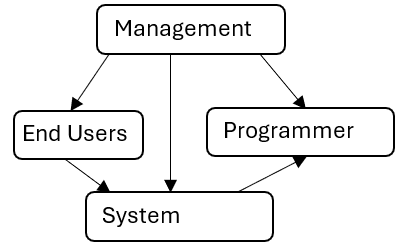

- Background of the study
- A discussion of your chosen Transactional Processing System (TPS)
- A discussion of what is a Computer Based Information System (CBIS) in the context of your chosen TPS.
- Company Profile
- A description of your chosen company Objectives: (copy as is for uniformity)
The main objective of the study is to introduce CBIS in (chosen company) (chosen TPS) specifically achieving the following:
- To determine the current state of the existing
; - To identify problems and concerns encountered in the existing (specify your TPS);
- To propose features that will address the problems and concerns in the existing (specify your TPS); and
- To justify the economic feasibility of the proposed (specify your TPS)
- Narrative of the current state of your TPS
- System Flowchart using PET (consistent with the narrative above)
- Ishikawa Diagram (highlights the problems and concerns)
- Narrative of the proposed CBIS (highlights the features of the proposed study)
- Data Flow Diagrams (consistent with the narrative above)
- Cost Benefit Analysis (justify the economic feasibility of your proposal)
- Savings
- Comparative Table
- Payback Period
- Net Present Value
- Return on Investment
- Conclusion (1 or 2 sentences that will encapsulate each objective)
- What is the current state?
- What are problems and concerns?
- What features are needed?
- Is it economically feasible?
- Recommendations
- What recommendations are needed to push through with the proposed study?
- Gantt Chart
- At least 10 Bibliographies (from BOOKS!): Authors, Title of the book, Publisher, Copyright date
Definition of terms
1. System- A group of interrelated components working together toward a common goal by accepting inputs and producing outputs in an organized transformation process.
- A series of interrelated elements that performs some activity, function or operation.
- A collection of men, machines and methods organized to accomplish a set of specific functions.
- Used to gain an understanding of an existing system and what is required of it. If there is no existing system, then analysis defines only the requirements.
- Proposes the new system that meets system’s requirements. This new system may be built afresh or by changing the existing system. Once the design is approved, the system is built.
A test of a system’s proposal based on several criterion. These are:
- Technical Feasibility: Hardware, Software, People ware
- Operational Feasibility: Processes, Procedures and Logic
- Economic Feasibility: Benefits should outweigh the costs
- Applies to the persons who investigate, analyze, design install and evaluate information systems.
- Does the actual work of gathering the necessary data and developing plans for new systems.
- An agent of change where some people may not want change.
- To build Computer Based Information Systems (CBIS) that shall meet organizational goals and objectives.
- Is not simply to put in a computer but to improve the system as a whole.
- Analysts must then study the system to see how such goals can be met. This does not always mean putting in a computer system. It can sometimes simply require changes to existing procedures, rearranging workflows or making forms more understandable.
This IT framework helps in organizing and understanding how data flows through a system, from its initial
entry to the final output, with intermediate steps of processing and storage.
Here’s how these stages interact:
- Input to Process: Data is fed into the system and processed.
- Process to Storage: The processed data may be saved in storage for later use.
- Storage to Process: When needed, stored data is retrieved and sent back for further processing.
- Process to Output: The final processed data is then used to produce the output.
This is the initial stage where data or information is introduced into the system. For example, it could be user inputs, data files, sensor readings, or any other form of data entry.
ProcessOnce the data is input, it is then processed. Processing involves performing operations or computations on the data to transform it into a more useful form. This could include calculations, data analysis, sorting, or applying algorithms.
StorageAfter processing, the results or intermediate data are often stored. Storage refers to saving this data in a database, file system, or other storage medium for future retrieval or use. This stage ensures that the processed data is preserved and can be accessed later.
OutputFinally, the stored data or the result of the processing is used to produce output. Output is the end result presented to the user or used for further purposes. It could be a report, a visual display, a command sent to another system, or any other form of result that serves the intended purpose.
Requirements of a Good Systems Analyst:
1. Communication Skills- Oral
- Written
- Interpersonal
- Fact Gathering
- Identification of Information Needs
- Feasibility Analysis
- Equipment Evaluation
- System Design
- Systematic problem solving
- Total Quality Management
- Value of Time
- Respects Deadlines
The systems analyst and the programmer both analyze and make programs. The only difference is in the frequency with which both perform the tasks.
| Task Frequently Done By: | |
|---|---|
| System Analyst | Programmer |
| 1. Defines requirements | 1. Translate detailed systems' model frameworks into programs |
| 2. Prepares functional specifications | 2. Maintains programs |
| 3. Prepares system specifications | 3. Debugs or tests |
| 4. Prepares systems' modelling and scheduling frameworks | 4. Prepares test data |
| 5. Designs forms and reports | 5. Prepares operator instructions |
| 6. Designs data items | |
| 7. Defines data organization | |
| 8. Defines system calculations | |
Management: This is the top-level entity in your diagram.
End Users: These are the individuals or groups who use the system.
System: This is the application or platform being developed or used.
Programmer: These are the individuals who design, develop, and maintain the system.
RelationshipsManagement to End Users: This indicates that management has a direct connection or influence on end users. Management may set policies, gather feedback, and make decisions that affect how end users interact with the system.
Management to System: Management is also connected to the system. This implies that management oversees or has influence over the system's development, implementation, or usage. They may make strategic decisions regarding the system’s objectives and resources.
Management to Programmer: This connection suggests that management interacts with programmers, possibly providing requirements, budgets, and deadlines. Management likely sets the direction and priorities for the development team.
End Users to System: This relationship shows that end users interact directly with the system. They use the system to perform tasks or achieve goals.
System to Programmer: This indicates that the system is a point of interaction or concern for programmers. Programmers work on the system, developing and maintaining its features and functionalities.
